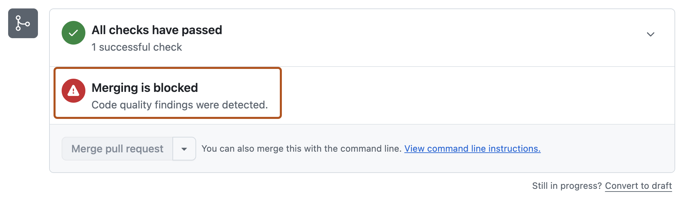
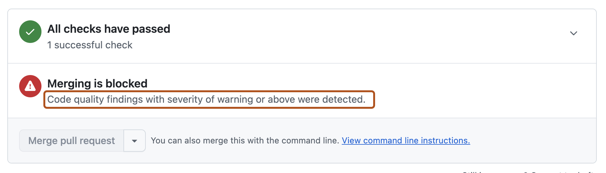

Identify and resolve a code quality block on your pull request so you can merge your changes.
Note
GitHub Code Quality is currently in public preview and subject to change.
During public preview, Code Quality will not be billed, although Code Quality scans will consume GitHub Actions minutes.
Repository administrators can set code quality gates for maintainability and reliability using GitHub Code Quality. When you open a pull request, a scan automatically runs to check your changes against these standards.
If your pull request introduces code that falls below the required quality threshold, you’ll see a merge block banner at the bottom of the pull request in the Checks section:
"Merging is blocked: Code quality findings were detected."

These checks help maintain a healthy, maintainable codebase and prevent technical debt from accumulating.
The results of the scan are reported as comments on your pull request, left by the github-code-quality[bot]. Each comment corresponds to a specific code quality problem that was detected in your changes.
Comments are labeled by severity (Error, Warning, Note). To learn more about what the severity levels mean, see Severity levels.
The quality gate set by repository administrators defines the minimum severity level that will block merging.
The merge block banner may specify the minimum severity level. All findings at that severity level or higher must be addressed before you can merge your pull request.

Note
If you don't see a severity level defined in the merge block banner, it means that your repository is using the most stringent code quality thresholds, which require all findings to be addressed before merging.
In order to unblock your pull request, you need to resolve each required finding by deciding whether to fix the issue in your code or dismiss the comment.
Comments on the pull request include a suggested autofix that you can commit directly to your pull request. Carefully review the suggested autofix for logic, security, and style, then click Commit suggestion.
You don't need a Copilot license to apply these suggestions.
Alternatively, if you have a Copilot license, you can delegate the remediation work to Copilot cloud agent. Comment on the pull request mentioning @Copilot and request that Copilot fix the detected issues.
Copilot responds with an eyes emoji (👀) to your comment, starts a new agent session, and opens a pull request with the necessary fixes.
You can track Copilot cloud agent's work:
You need a Copilot license to invoke Copilot cloud agent.
Sign up for Copilot
You can dismiss a finding if it isn’t relevant or actionable in the context of your codebase. Common reasons to dismiss a finding include:
Dismissing irrelevant alerts keeps your quality checks focused on meaningful issues.
To see if you've met the code quality requirements, look at the "Checks" section at the bottom of your pull request. The merge block banner should no longer be present, and you should be able to merge your changes as usual.
Reduce technical debt by fixing findings in recently changed files. See Improving the quality of recently merged code with AI.